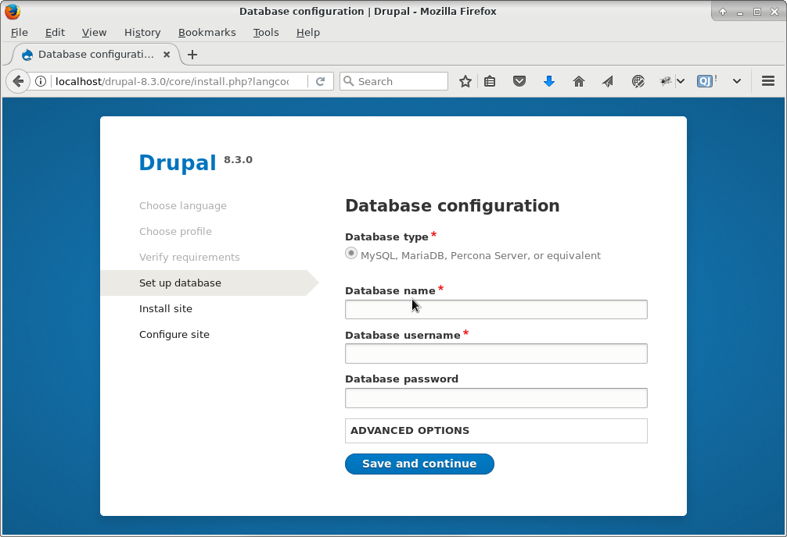

コンテンツ管理システム (CMS)ダウンロード
wget https://ftp.drupal.org/files/projects/drupal-8.3.0.tar.gz前提条件
PHP が動くWeb サーバーが動いていること。 Ubuntuインストール# apt install php-xmlArch Linux
# apt install php-gd
# apt install php-mysql # a2enmod rewrite /etc/apache2/apache2.conf<Directory /var/www/html/drupal>
AllowOverride All
</Directory>
# pacman -S php-gd /etc/php/php.iniMariaDB を使う場合は、ユーザー、パスワード、データベースを作成しておくこと。zend_extension=opcache.so# apt install mariadb-server$ mysql -udrupal -pdrupal drupal Welcome to the MariaDB monitor. Commands end with ; or \g. Your MariaDB connection id is 68 Server version: 10.1.21-MariaDB MariaDB Server Copyright (c) 2000, 2016, Oracle, MariaDB Corporation Ab and others. Type 'help;' or '\h' for help. Type '\c' to clear the current input statement.
$ tar xvfz drupal-8.3.0.tar.gz drupal-8.3.0 をWeb からアクセスできるようにする。 ブラウザーで、http://localhost/drupal-8.3.0/ sites/default/settings.php
Drush のインストール$databases['default']['default'] = array ( 'database' => 'drupal', 'username' => 'drupal', 'password' => 'drupal',
$ wget http://files.drush.org/drush.phar
REST UI のダウンロード$ php drush.phar core-status PHP configuration : /etc/php/php.ini PHP OS : Linux Drush script : /home/uchida/tools/drupal/drush.phar Drush version : 8.1.9 Drush temp directory : /tmp Drush configuration : Drush alias files :
$ ./drush.phar dl restui フォルダーの置き場所設定drupal-8.2.6/modules/restui
GET で記事を取り出す
curl -X GET http://localhost/drupal-8.2.6/node/2?_format=json